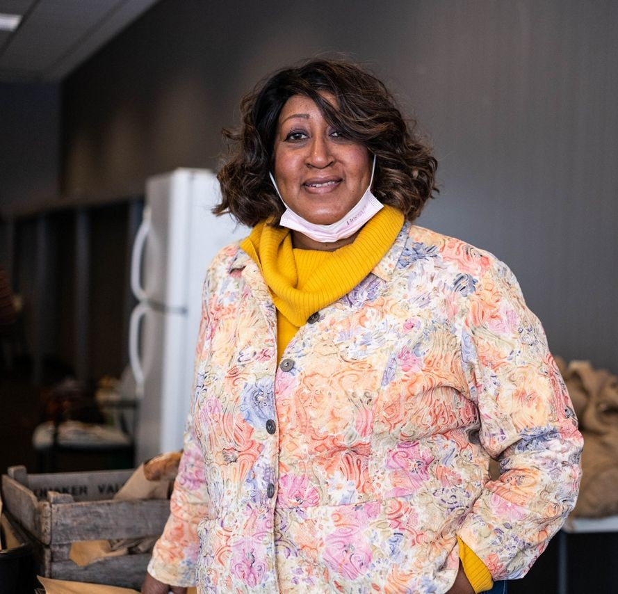
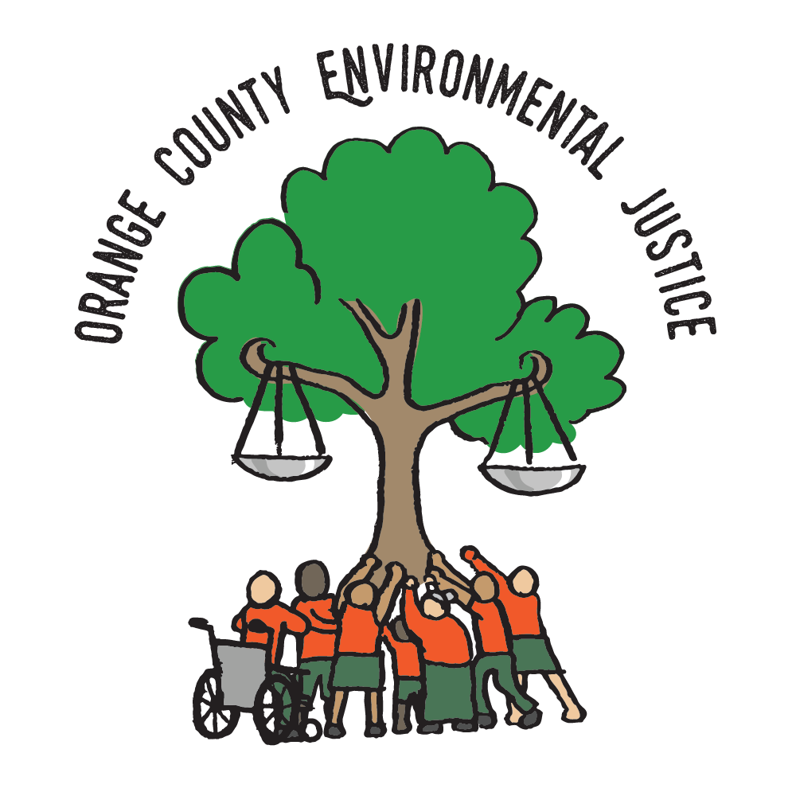

University of California, Irvine
Jean-Daniel Saphores
Professor of Civil and Environmental Engineering and Director of the Institute for Transportation Studies.
Official profileLimited transportation options can make grocery shopping difficult for low-income households, seniors, and people with disabilities. This study surveys residents in Santa Ana, CA, and Syracuse, NY, to understand travel patterns and preferences for grocery access, including access to co-ops, mobile markets, and delivery services. Results will guide strategies to improve access to healthy food in underserved communities.
The findings and community briefs presented on this site are drawn from 476 valid survey responses collected in Syracuse, New York, from October through December 2025. They explore health and wellness, grocery shopping overall, and grocery trips by city bus.
University of California, Irvine
Professor of Civil and Environmental Engineering and Director of the Institute for Transportation Studies.
Official profileSyracuse University
Professor of Nutrition and Food Studies at the Falk College.
Official profile
Syracuse, New York
Executive Director of Food Access Healthy Neighborhoods Now! (FAHNN).
FAHNN profileSanta Ana, California
An urban-farm collective supporting BIPOC farmers and food stewards and a transition to community-owned food systems.
Official website
Orange County, California
A community organization advancing environmental and climate justice through advocacy, public accountability, healing, and systemic transformation.
Official websiteUniversity of California, Irvine
Ph.D. student in Civil and Environmental Engineering and Graduate Student Researcher at ITS-Irvine.
Official profileThese findings reflect the Syracuse, New York survey. Together, the three briefs show that food access is not a single issue: household budgets, health, neighborhood retail, and transportation all influence whether fresh food is within reach.
Syracuse survey · October–December 2025 · 476 valid responses · 421 in person · 55 online
Community brief I · 01
This brief describes where households shop, what makes grocery shopping difficult, and the food retail and transportation options residents say would improve access to fresh food.
How respondents grocery shop
Barriers and resident priorities
After affordability, respondents most often identified limited fresh or healthy options (31.3%), high transportation costs (22.9%), and lack of time (20.8%).
How to read these percentagesThe share of respondents who said each option would improve their access to fresh food.
Community brief II · 02
This brief summarizes residents’ answers about food security, self-described health, stress, diet-related conditions, and beliefs about the role of fresh food in supporting health.
Food security in the last 12 months
Health and the perceived benefit of fresh food
35% reported inadequate access to mental health care. The most common diet-related issues were hypertension (23.1%) and type 2 diabetes (14.9%).
How to read these percentagesThe share of respondents who believe fresh food can help address each health condition.
Community brief III · 03
This brief focuses on how residents use city buses for grocery trips, the barriers riders face, and practical changes that could make fresh food easier and safer to reach.
Barriers among those seeking improvements
How to read these percentagesThese percentages are calculated only among the 30% of respondents who said improved public transportation would help them access fresh food.
Changes residents said would help
Among respondents who felt unsafe using public transportation, 61% wanted better lighting, 56% designated grocery storage, 55% improved security, and 53% a way to secure a shopping cart next to them.
How to read these percentagesThese percentages are calculated only among the 30% of respondents who said improved public transportation would help them access fresh food.
Where residents shop, the barriers they encounter, and what they say would improve fresh food access.
Download PDFFood security, health, stress, diet-related conditions, and residents’ views on the benefits of fresh food.
Download PDFBus use for grocery trips, transportation barriers, safety concerns, and resident-prioritized improvements.
Download PDF1–2 of 4
With Gratitude
We gratefully acknowledge survey volunteers and UCI students Edgar Avalos and Llorenc Miquel Sole, all survey participants, and the food pantries, churches, and libraries in Syracuse, New York, and Santa Ana, California, that supported this research.